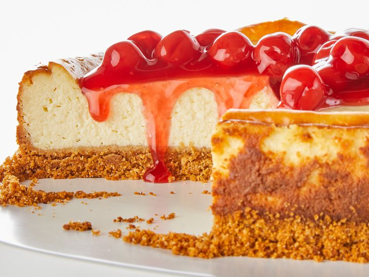

Cheesecake
Here's what you'll need to make this top-rated Philadelphia cheesecake:
-
Graham Cracker Crumbs:
A graham cracker crust is the base of this easy cheesecake recipe.
Crush whole graham crackers or purchase pre-crushed crumbs at the store.
-
Butter:
Melted butter holds the crust together while adding rich flavor.
-
Cream Cheese:
Allow the cream cheese to come to room temperature before making the filling.
If you don't have time, you can soften it quickly by beating it or microwaving it in short intervals.
-
Sour cream:
One cup of sour cream adds richness, tanginess, and complexity to this perfect cheesecake recipe.
-
Vanilla:
Two teaspoons of vanilla adds flavor and brings out the subtle flavors of the other ingredients.
-
Eggs:
Three whole eggs ensure a smooth, creamy, thick cheesecake filling.
-
Pie Filling (Optional):
Top this cheesecake with canned pie filling for a restaurant-worthy finish.
How to Make Cheesecake Step-By-Step
You'll find the full, step-by-step recipe for cheesecake below — but here's a brief overview of what you can expect when you make this decadent dessert:
-
Make the Crust:
Mix the graham cracker crumbs, melted butter, and some of the sugar in a bowl. Use your fingertips to press the mixture into the bottom of a springform pan.
-
Make the Filling
Beat the cream cheese and sugar until smooth. Mix in the sour cream and vanilla. Beat in the eggs one at a time on low speed. Pour the filling over the crust.
-
Bake the Cheesecake
Allow the cream cheese to come to room temperature before making the filling.
If you don't have time, you can soften it quickly by beating it or microwaving it in short intervals.
-
How to Tell If a Cheesecake Is Done
Unlike other cakes, you don't want to check for doneness by inserting a knife or toothpick into the center. Instead, don your oven mitts and give the cheesecake a gentle shake — if it looks mostly set aside from a slight jiggle in the center, it's done. The center will set as the cake cools.
Main page